12 Exemplos de Analises Espaciais
12.1 Exemplo com os dados de dengue em Dourados/MS
Nesta aula serão utilizados os dados da monografia de Isis Rodrigues Reitman, apresentada ao Curso de Geografia da Faculdade de Ciências Humanas da Universidade Federal da Grande Douradosos/MS, em março de 2013. O título da monografia é: “DISTRIBUIÇÃO ESPACIAL DOS CASOS DE DENGUE NO PERÍMETRO URBANO DE DOURADOS-MS E SUA RELAÇÃO COM OS FATORES SOCIOAMBIENTAIS E POLÍTICOS”
# necessário mudar devido a forma com que o
# Windows acessa as url
options(download.file.method = "libcurl", url.method = "libcurl")Lendo a tabela da população por setor censitário e baixando os shapes files do contorno e por setor censitário de Dourados/MS
local <- "https://raw.githubusercontent.com/ogcruz/dados_eco_2023/main/dados/"
pop2010 <- read_csv(paste0(local, "pop2010.csv"))
tmpdir <- tempdir()
download.file(paste0(local, "setores_dourados.zip"),
destfile = paste0(tmpdir, "/dourados.zip"))
unzip(zipfile = paste0(tmpdir, "/dourados.zip"), exdir = tmpdir)
dir(tmpdir) [1] "35municipality_2010_simplified.gpkg" "contorno.dbf" "contorno.sbn" "contorno.sbx" "contorno.shp" "contorno.shx" "dourados.zip" "file592a77e980a" "metadata_gpkg.csv" "neighborhoods_2010_simplified.gpkg" "olinda.dbf" "olinda.shp" "olinda.shx" "olinda.zip" "Setor_UTM_SIRGAS.dbf" "Setor_UTM_SIRGAS.prj" "Setor_UTM_SIRGAS.sbn" "Setor_UTM_SIRGAS.sbx" "Setor_UTM_SIRGAS.shp" "Setor_UTM_SIRGAS.shx" setor.sf <- read_sf(paste0(tmpdir, "/Setor_UTM_SIRGAS.shp"),
crs = 31981)
contorno.sf <- read_sf(paste0(tmpdir, "/contorno.shp"),
crs = 31981)Fazendo um join com as tabelas com os setores censitários + popoulação
setor.sf <- setor.sf %>%
mutate(idsetor = as.numeric(CD_GEOCODI)) %>%
inner_join(pop2010, by = "idsetor")[1] "contorno.dbf" "contorno.sbn"
[3] "contorno.sbx" "contorno.shp"
[5] "contorno.shx" "dourados.zip"
[7] "Setor_UTM_SIRGAS.dbf" "Setor_UTM_SIRGAS.prj"
[9] "Setor_UTM_SIRGAS.sbn" "Setor_UTM_SIRGAS.sbx"
[11] "Setor_UTM_SIRGAS.shp" "Setor_UTM_SIRGAS.shx" - Lendo e plotando os casos de dengue georreferenciados em Dourados/MS
casos <- read_csv(paste0(local, "dengue_dourados.csv"))
casos.sf <- st_as_sf(casos, coords = c("X", "Y"), crs = 31981)
ggplot(setor.sf) + geom_sf(fill = "white", color = "black") +
geom_sf(data = casos.sf, color = "red", size = 1) +
theme_void()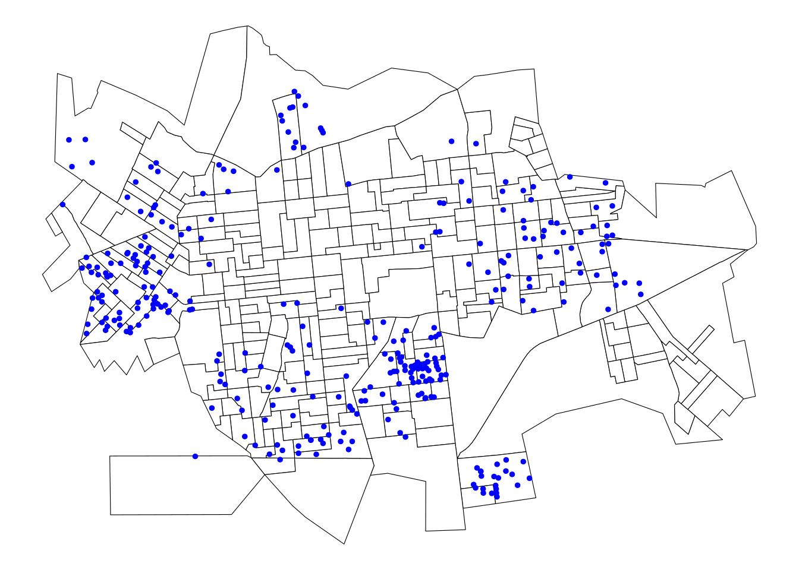
- Lendo e plotando os os pontos de coleta de lixo georreferenciados em Dourados/MS
lixo <- read_csv2(paste0(local, "lixo_dourados.csv"))
lixo.sf <- st_as_sf(lixo, coords = c("X", "Y"), crs = 31981)
ggplot(setor.sf) + geom_sf(fill = "white", color = "black") +
geom_sf(data = lixo.sf, color = "blue", size = 1) +
theme_void()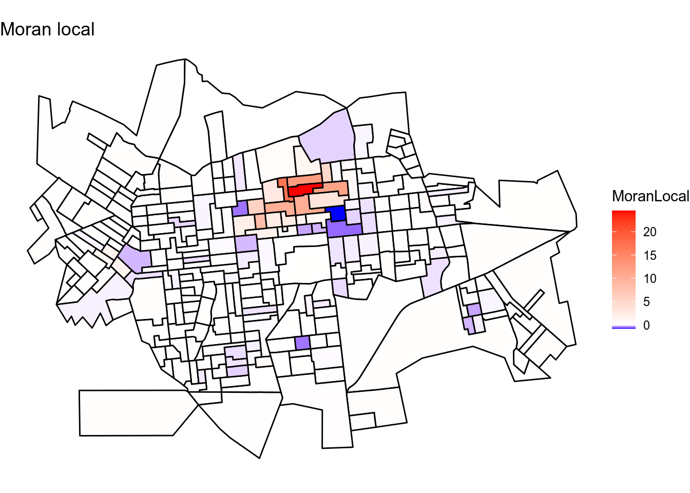
Como podemos observar, existem alguns pontos de coleta de lixo fora do contorno de Dourados/MS. Uma forma de ficarmos só com os pontos dentro do polígono é utilizando o comando st_intersection.
lixo2.sf <- st_intersection(contorno.sf, lixo.sf)
ggplot(setor.sf) + geom_sf(fill = "white", color = "black") +
geom_sf(data = lixo2.sf, color = "blue", size = 1) +
theme_void()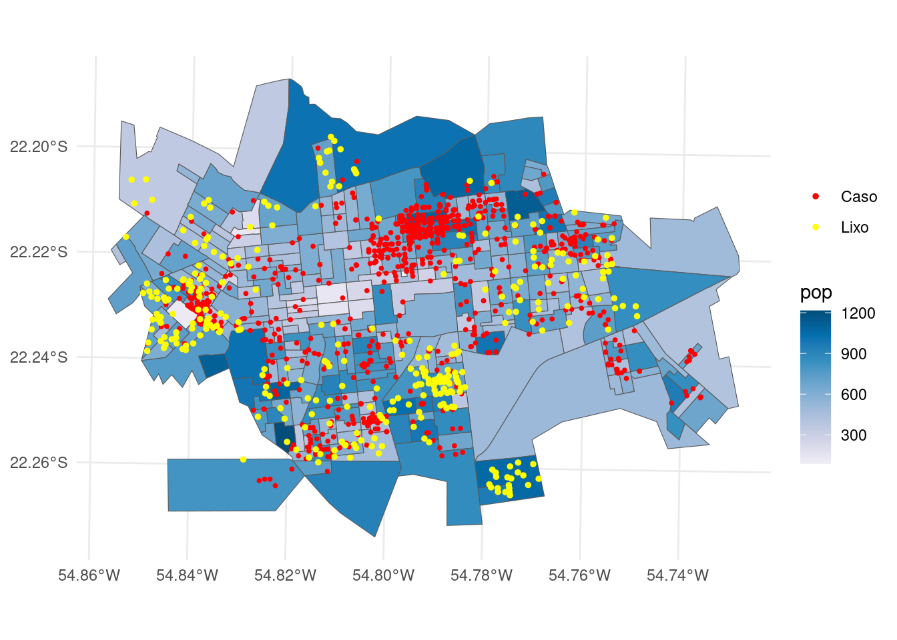
Agora sim!
Verificando as paletas de cores disponíveis com o RColorBrewer:
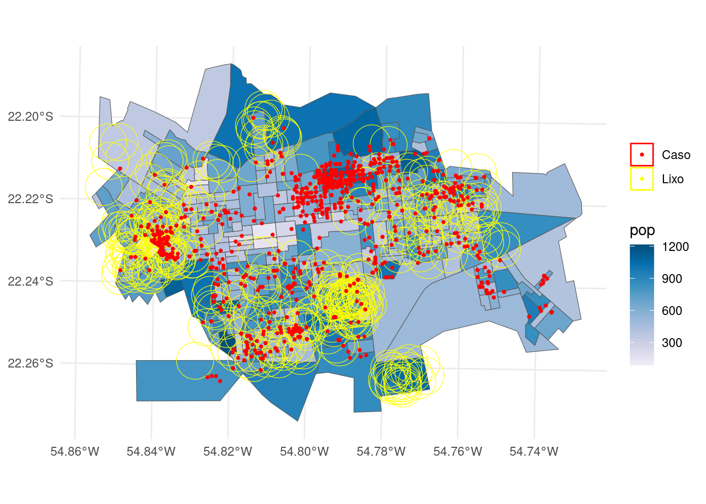
Utilizando as informações dos casos (pontos) + do lixo (ponto) + população de cada setor censitário (mapa temático)
ggplot(setor.sf) + geom_sf(aes(fill = pop)) + geom_sf(data = casos.sf,
size = 0.7, aes(colour = "Caso"), show.legend = "point") +
geom_sf(data = lixo2.sf, size = 1, aes(colour = "Lixo"),
show.legend = "point") + scale_fill_distiller(palette = "PuBu",
direction = 1) + scale_colour_manual(values = c(Caso = "red",
Lixo = "yellow"), name = "") + theme_minimal()
Iremos agora construir buffers de 500m de distância ao redor de cada ponto de coleta de lixo. Isso é interessante para verificar se os casos de dengue ocorrem em um raio de até 500m de distância dos pontos de coleta de lixo. Ou seja, a pergunta é, será que a distância dos pontos de coeta de lixo influenciam a ocorrência do caso de dengue ?
Buffers: São polígonos que contornam um objeto a uma determinada distância. Sua principal função é materializar os conceitos de “perto” e “longe”.
lixo_buffer <- st_buffer(lixo2.sf, 500)
ggplot(setor.sf) + geom_sf(aes(fill = pop)) + geom_sf(data = lixo_buffer,
aes(color = "Lixo"), fill = "transparent", size = 0.4) +
geom_sf(data = casos.sf, aes(color = "Caso"), size = 0.7) +
scale_fill_distiller(palette = "PuBu", direction = 1) +
scale_colour_manual(values = c(Caso = "red", Lixo = "yellow"),
name = "") + theme_minimal()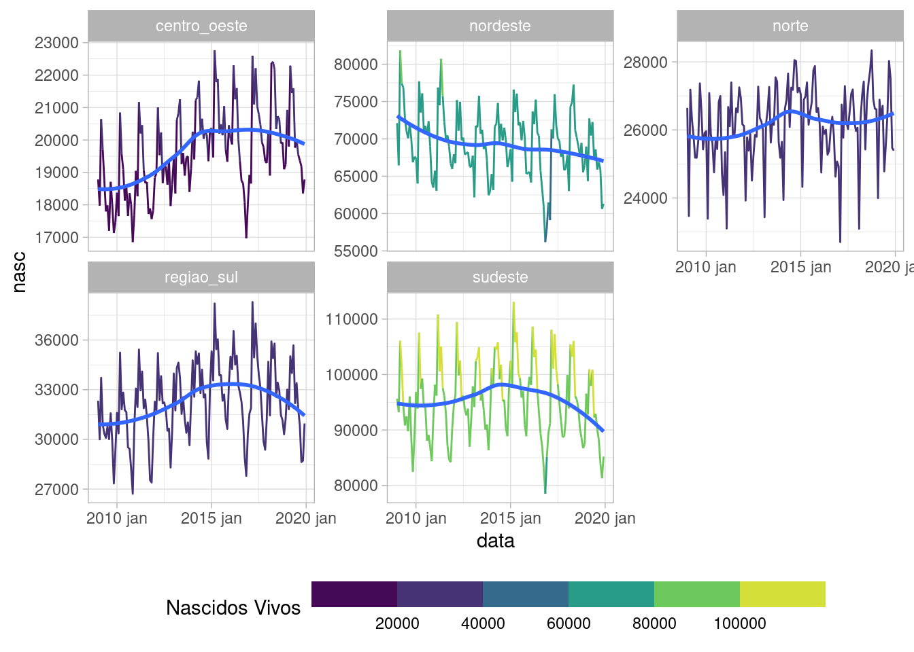
Represntando os casos e o lixo de forma interativa.
tm_shape(setor.sf) + tm_borders("black") + tm_shape(casos.sf) +
tm_dots("red") + tm_shape(lixo.sf) + tm_dots("green") +
tm_shape(lixo_buffer) + tm_borders("blue")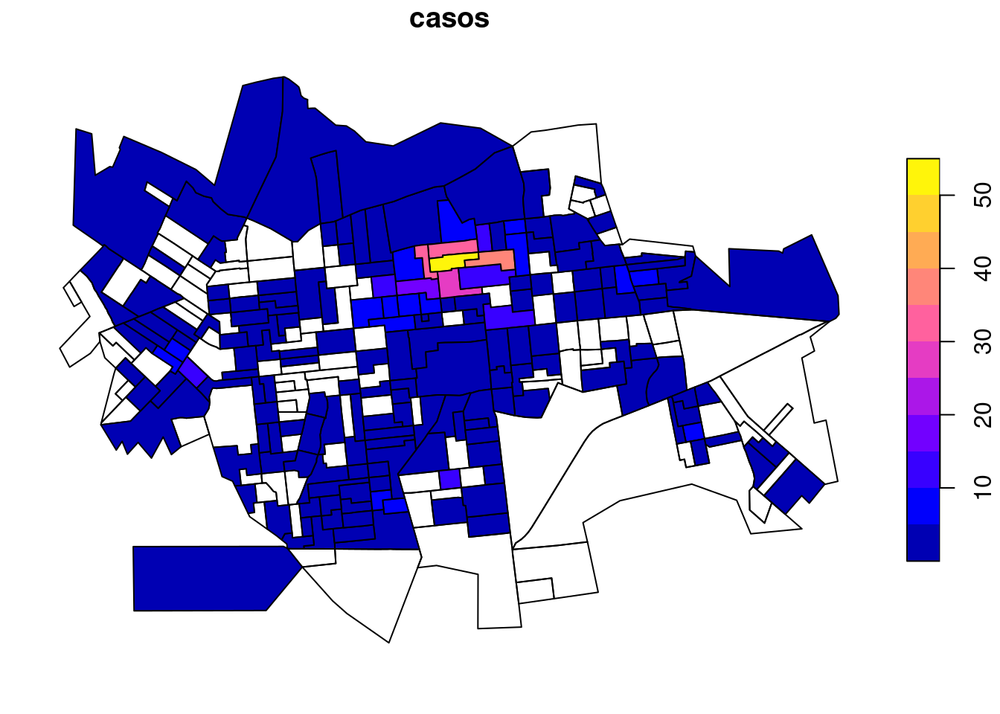
## conta casos por setor
casos <- setor.sf %>%
st_join(casos.sf) %>%
filter(CLASSI_FIN == 1) %>%
count(ID)
casos <- casos %>%
st_drop_geometry() ## remove atributos de geometria
## numero de depositos de Lixo por setor
lixo <- setor.sf %>%
st_join(lixo.sf) %>%
count(ID)
lixo <- lixo %>%
st_drop_geometry() ## remove atributos de geometria
# Inserindo as contagens dos casos e de pontos de
# coleta de lixo no atributo com a geometria.
setor.sf <- setor.sf %>%
left_join(lixo %>%
rename(lixo = n), by = "ID") %>%
left_join(casos %>%
rename(casos = n), by = "ID")Plotando o mapa temático dos casos por setor censitário

Plotando o mapa temático dos pontos de coleta de lixo por setor censitário
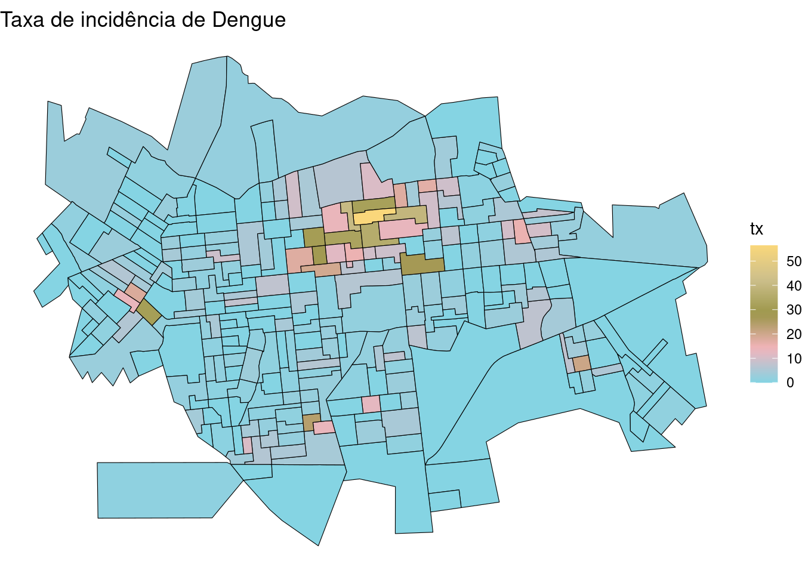
Calculando a taxa de incidência e plotando o mapa temático dos pontos de coleta de lixo por setor censitário
setor.sf$tx <- (setor.sf$casos/setor.sf$pop) * 1000
setor.sf$tx[is.na(setor.sf$tx)] <- 0 # Transformando os missings em zero
summary(setor.sf$tx) Min. 1st Qu. Median Mean 3rd Qu. Max.
0.00 0.00 1.74 4.06 4.31 56.40 library(wesanderson)
pal <- wes_palette("Moonrise3", 20, type = "continuous")
ggplot(setor.sf) + geom_sf(aes(fill = tx), color = "black") +
scale_fill_gradientn(colours = pal) + ggtitle("Taxa de incidência de Dengue") +
theme_void()
12.2 Kernel por atributos
Vamos plotar o kernel por atributos referente a taxa de incidência de dengue em Dourados/MS.
Primeiramente é necessário dissolver os poligonos em formato sf para obter o contorno. Nesse caso queremos preservar o atributo AREA
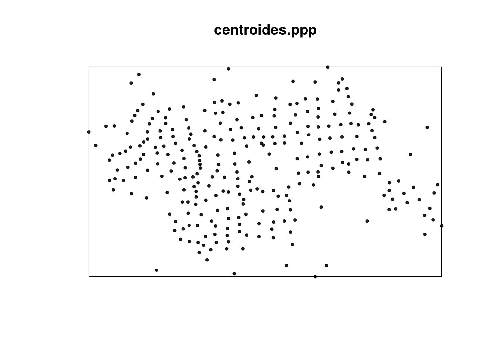
Extraindo os centróidas dos polígonos em Dourados/MS.
centroides <- st_centroid(st_geometry(setor.sf))
# Transformando em os centróides em formato sp
# centroides.sp <-
# as.data.frame(as_Spatial(centroides))
# names(centroides.sp) <- c('X','Y')
# plot(centroides.sp)Colocando os pontos no formato sp
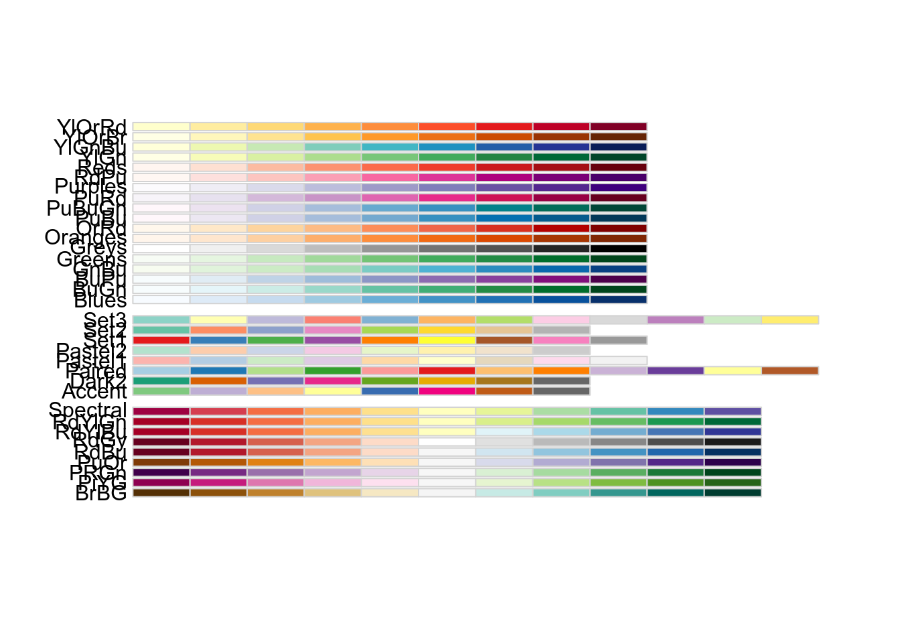
Fazendo o kernel por atributo da taxa de detecção
kernel.tx <- density(centroides.ppp, 500, weights = setor.sf$tx,
scalekernel = TRUE)
plot(kernel.tx)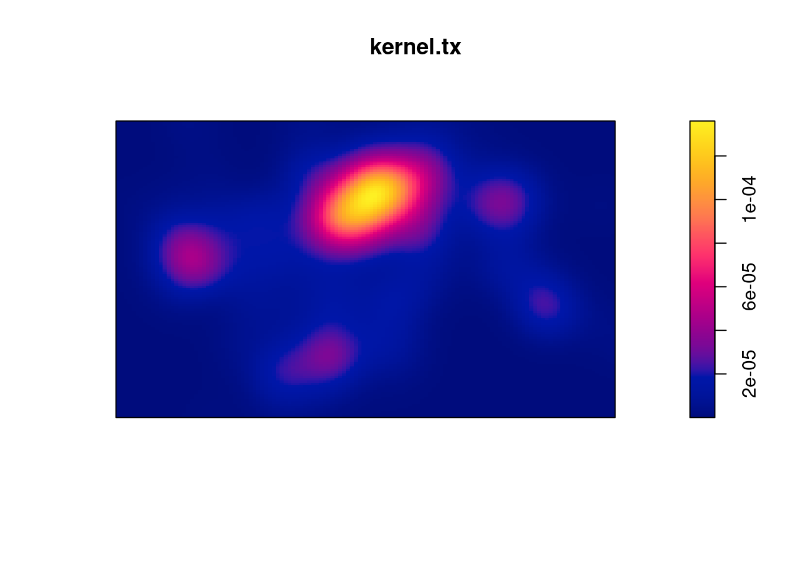
Construindo a matriz de vizinhança para verificar a autocorrelação espacial.
Neighbour list object:
Number of regions: 284
Number of nonzero links: 1726
Percentage nonzero weights: 2.14
Average number of links: 6.077 Iremos precisar da coordenadas dos centróides
12.3 Matriz de Vizinhança
Verificando a malha de conectividade da vizinhança de Dourados/MS
viz.sf <- viz %>%
nb2lines(coords = coord) %>%
st_as_sf()
viz.sf <- st_set_crs(viz.sf, st_crs(setor.sf))
# Plota o grafo de conectividade por contiguidade
mapa.viz <- ggplot(setor.sf) + geom_sf(fill = "salmon",
color = "white") + geom_sf(data = viz.sf) + theme_minimal() +
ggtitle("Vizinhança por \n conectividade") + ylab("Latitude") +
xlab("Longitude")
mapa.viz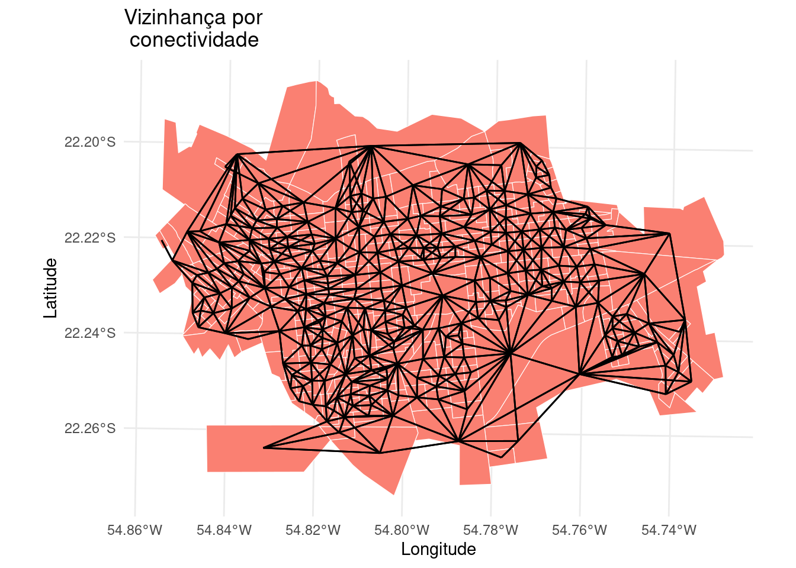
12.4 Autocorrelação Espacial
Obtendo a correlação da taxa de incidência de dengue Dourados/MS
Moran I test under randomisation
data: setor.sf$tx
weights: pesos.viz
Moran I statistic standard deviate = 16, p-value <2e-16
alternative hypothesis: greater
sample estimates:
Moran I statistic Expectation Variance
0.524720 -0.003534 0.001129 Plotando o correlograma
Spatial correlogram for setor.sf$tx
method: Moran's I
estimate expectation variance standard deviate Pr(I) two sided
1 (284) 0.524720 -0.003534 0.001129 15.72 < 2e-16 ***
2 (284) 0.237768 -0.003534 0.000485 10.95 < 2e-16 ***
3 (284) 0.095366 -0.003534 0.000284 5.87 4.3e-09 ***
4 (284) -0.020634 -0.003534 0.000197 -1.22 0.224
5 (284) -0.075892 -0.003534 0.000167 -5.59 2.2e-08 ***
6 (284) -0.064484 -0.003534 0.000162 -4.79 1.6e-06 ***
7 (284) -0.027083 -0.003534 0.000167 -1.82 0.069 .
8 (284) -0.027445 -0.003534 0.000183 -1.77 0.077 .
---
Signif. codes: 0 '***' 0.001 '**' 0.01 '*' 0.05 '.' 0.1 ' ' 1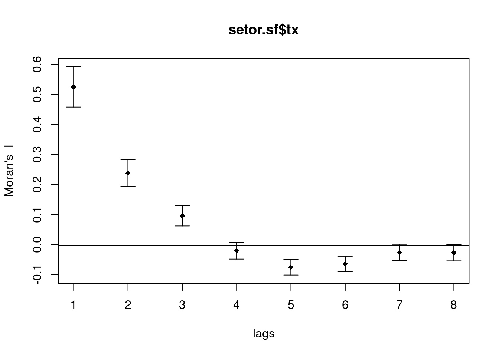
Mapeando os polígonos que tiveram os p-valores mais significativos no Moran Local.
setor.sf$pval <- localmoran(setor.sf$tx, pesos.viz)[,
5]
tm_shape(setor.sf) + tm_polygons(col = "pval", title = "p-valores",
breaks = c(0, 0.01, 0.05, 0.1, 1), border.col = "white",
palette = "-Oranges") + tm_scale_bar(width = 0.15)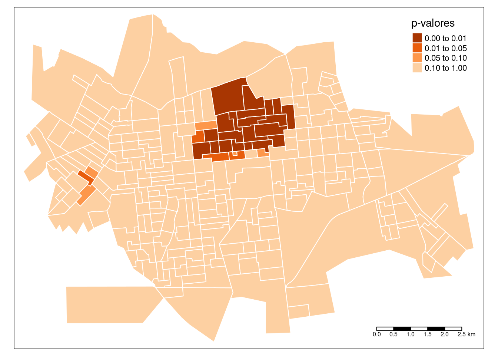
Moran Local (Lisa Map) da taxa de incidência Dourados/MS
Local Morans I Stand. dev. (N) Pr. (N) Saddlepoint Pr. (Sad) Expectation Variance Skewness Kurtosis Minimum Maximum omega sad.r sad.u
1 1 -0.009885 -0.01575 1.0126 -0.03601 0.9713 -0.003534 0.1626 -0.05148 8.753 -57.75 56.75 -0.0001370 -0.01569 -0.01570
2 2 0.226981 0.46512 0.6418 0.70056 0.4836 -0.003534 0.2456 -0.04188 8.753 -70.87 69.87 0.0028119 0.44473 0.49832
3 3 -0.010911 -0.01830 1.0146 -0.04042 0.9678 -0.003534 0.1626 -0.05148 8.753 -57.75 56.75 -0.0001591 -0.01823 -0.01823
4 4 0.484676 1.31014 0.1901 1.43930 0.1501 -0.003534 0.1389 -0.05570 8.754 -53.41 52.41 0.0066304 1.08298 1.59298
5 5 0.018649 0.05953 0.9525 0.09384 0.9252 -0.003534 0.1389 -0.05570 8.754 -53.41 52.41 0.0005595 0.05930 0.05942
6 6 0.045043 0.13961 0.8890 0.22936 0.8186 -0.003534 0.1211 -0.05966 8.754 -49.91 48.91 0.0013876 0.13866 0.14041
7 7 0.107199 0.31825 0.7503 0.50632 0.6126 -0.003534 0.1211 -0.05966 8.754 -49.91 48.91 0.0029656 0.31095 0.33043
8 8 0.153965 0.42266 0.6725 0.64704 0.5176 -0.003534 0.1389 -0.05570 8.754 -53.41 52.41 0.0034865 0.40708 0.44885
9 9 -0.109294 -0.28382 1.2234 -0.46939 0.6388 -0.003534 0.1389 -0.05570 8.754 -53.41 52.41 -0.0024730 -0.27705 -0.29222
10 10 -0.147818 -0.32607 1.2556 -0.52794 0.5975 -0.003534 0.1958 -0.04691 8.753 -63.33 62.33 -0.0023467 -0.31667 -0.33858setor.sf$MoranLocal <- summary(resI)[, 1]
library(scales)
ggplot(setor.sf) + geom_sf(aes(fill = MoranLocal),
color = "black") + scale_fill_gradientn(colours = c("blue",
"white", "red"), values = rescale(c(min(setor.sf$MoranLocal),
0, max(setor.sf$MoranLocal))), guide = "colorbar") +
ggtitle("Moran local") + theme_void()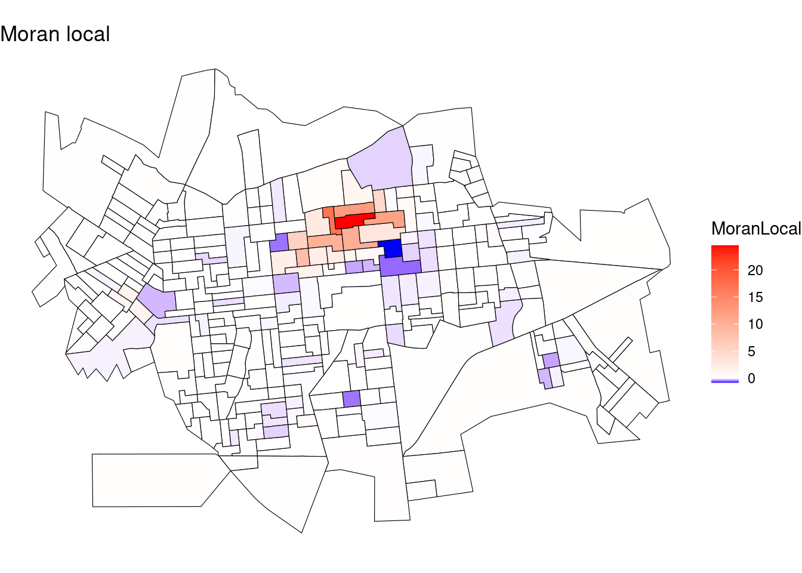
12.5 Modelos Linear, CAR e GWR
Ajustando o modelo de regressão linear simples.
library(spatialreg)
setor.sf$lixo[is.na(setor.sf$lixo)] <- 0 # Transformando os missings em zero
dourados.lm <- lm(tx ~ lixo, data = setor.sf)
summary(dourados.lm)
Call:
lm(formula = tx ~ lixo, data = setor.sf)
Residuals:
Min 1Q Median 3Q Max
-4.31 -4.31 -2.34 0.25 52.09
Coefficients:
Estimate Std. Error t value Pr(>|t|)
(Intercept) 4.660 0.574 8.12 1.5e-14 ***
lixo -0.351 0.219 -1.61 0.11
---
Signif. codes: 0 '***' 0.001 '**' 0.01 '*' 0.05 '.' 0.1 ' ' 1
Residual standard error: 7.39 on 282 degrees of freedom
Multiple R-squared: 0.00907, Adjusted R-squared: 0.00555
F-statistic: 2.58 on 1 and 282 DF, p-value: 0.109Checando os residuos para verificar a presença de autocorrelação.
Moran I test under randomisation
data: dourados.lm$lmresid
weights: pesos.viz
Moran I statistic standard deviate = 16, p-value <2e-16
alternative hypothesis: greater
sample estimates:
Moran I statistic Expectation Variance
0.521094 -0.003534 0.001129 Ajustando o modelo CAR.
Call:errorsarlm(formula = tx ~ lixo, data = setor.sf, listw = pesos.viz)
Residuals:
Min 1Q Median 3Q Max
-12.6831 -2.3592 -1.1850 0.8005 31.7024
Type: error
Coefficients: (asymptotic standard errors)
Estimate Std. Error z value Pr(>|z|)
(Intercept) 4.16077 1.56456 2.6594 0.007829
lixo -0.19873 0.16159 -1.2298 0.218756
Lambda: 0.8059, LR test value: 168.2, p-value: < 2.22e-16
Asymptotic standard error: 0.04163
z-value: 19.36, p-value: < 2.22e-16
Wald statistic: 374.8, p-value: < 2.22e-16
Log likelihood: -885.7 for error model
ML residual variance (sigma squared): 25.56, (sigma: 5.056)
Number of observations: 284
Number of parameters estimated: 4
AIC: NA (not available for weighted model), (AIC for lm: 1946)Checando os residuos para verificar a presença de autocorrelação.
Moran I test under randomisation
data: dourados.car$carresid
weights: pesos.viz
Moran I statistic standard deviate = 0.77, p-value = 0.2
alternative hypothesis: greater
sample estimates:
Moran I statistic Expectation Variance
0.022443 -0.003534 0.001147 Ajustando o modelo GWR
Precisamos estimar a largura de banda “ideal” para o kernel
# Biblioteca para ajustar o modelos GWR
library(spgwr)
GWRbanda <- gwr.sel(tx ~ lixo, data = setor.sf, coords = coord,
adapt = T, method = "aic")Bandwidth: 0.382 AIC: 1934
Bandwidth: 0.618 AIC: 1940
Bandwidth: 0.2361 AIC: 1926
Bandwidth: 0.1459 AIC: 1910
Bandwidth: 0.09017 AIC: 1886
Bandwidth: 0.05573 AIC: 1862
Bandwidth: 0.03444 AIC: 1842
Bandwidth: 0.02129 AIC: 1842
Bandwidth: 0.02826 AIC: 1844
Bandwidth: 0.04257 AIC: 1849
Bandwidth: 0.03755 AIC: 1845
Bandwidth: 0.03208 AIC: 1842
Bandwidth: 0.03062 AIC: 1843
Bandwidth: 0.03298 AIC: 1842
Bandwidth: 0.03235 AIC: 1842
Bandwidth: 0.03239 AIC: 1842
Bandwidth: 0.03243 AIC: 1842
Bandwidth: 0.03239 AIC: 1842 [1] 0.03239dourados.gwr = gwr(tx ~ lixo, data = setor.sf, coords = coord,
adapt = GWRbanda, hatmatrix = TRUE, se.fit = TRUE)
dourados.gwrCall:
gwr(formula = tx ~ lixo, data = setor.sf, coords = coord, adapt = GWRbanda,
hatmatrix = TRUE, se.fit = TRUE)
Kernel function: gwr.Gauss
Adaptive quantile: 0.03239 (about 9 of 284 data points)
Summary of GWR coefficient estimates at data points:
Min. 1st Qu. Median 3rd Qu. Max. Global
X.Intercept. 0.8919 2.4355 3.7191 5.2530 24.7431 4.66
lixo -5.9357 -0.9172 -0.3512 -0.0697 0.9090 -0.35
Number of data points: 284
Effective number of parameters (residual: 2traceS - traceS'S): 36.6
Effective degrees of freedom (residual: 2traceS - traceS'S): 247.4
Sigma (residual: 2traceS - traceS'S): 5.971
Effective number of parameters (model: traceS): 26.07
Effective degrees of freedom (model: traceS): 257.9
Sigma (model: traceS): 5.848
Sigma (ML): 5.573
AICc (GWR p. 61, eq 2.33; p. 96, eq. 4.21): 1842
AIC (GWR p. 96, eq. 4.22): 1808
Residual sum of squares: 8820
Quasi-global R2: 0.4318 Colocando a saída do modelo dentro de um dataframe.
sum.w X.Intercept. lixo X.Intercept._se lixo_se gwr.e pred pred.se localR2 X.Intercept._se_EDF lixo_se_EDF pred.se.1 X Y
1 19.66 5.227 -1.0002 1.732 0.9293 -0.5490 3.226 1.061 0.2187 1.769 0.9489 1.084 731406 7541547
2 12.10 6.961 -1.4575 2.798 1.5679 4.3652 5.503 1.598 0.1480 2.857 1.6009 1.631 730845 7541481
3 13.43 6.318 -1.2980 2.487 1.3560 -1.1735 5.020 1.474 0.1869 2.539 1.3846 1.505 730958 7541239
4 15.91 5.782 -1.0005 2.422 1.4598 10.6511 4.781 1.308 0.1480 2.473 1.4905 1.336 730487 7541437
5 20.66 5.050 -0.7489 2.060 1.3500 -3.0285 4.301 1.054 0.2300 2.103 1.3784 1.076 729874 7541446
6 17.95 4.364 -0.6520 2.160 1.3743 0.2873 2.408 2.402 0.1636 2.206 1.4033 2.453 729919 7541019Verificando a distribuição dos coeficientes de regressão para a variável lixo
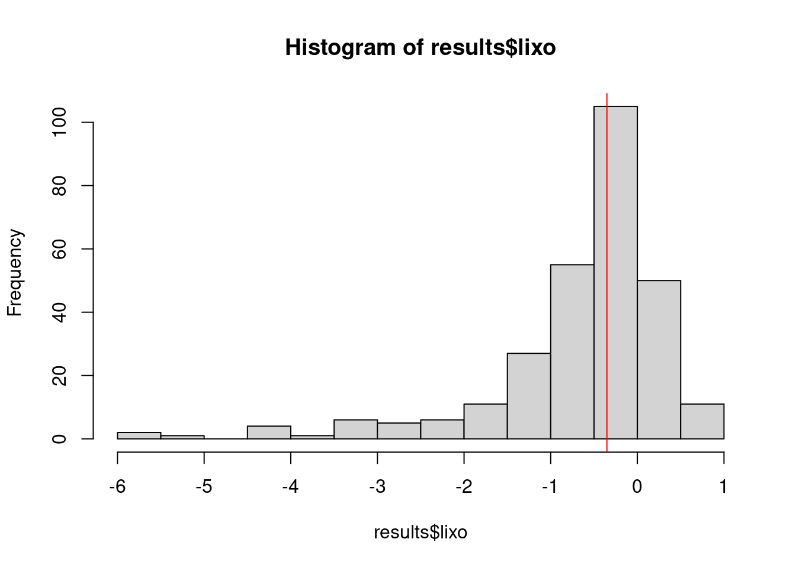
Verificando a distribuição dos localR2
Incorporando alguns parâmetros de saída do modelo na tabela olinda.sf
setor.sf$coef.lixo <- results$lixo
setor.sf$localR2 <- results$localR2
setor.sf$pred.gwr <- results$predDefinindo as paletes de cores para a construção dos mapas.
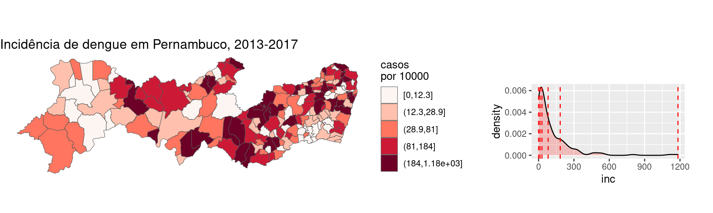
Mapa dos coeficientes de regressão para a variável lixo
map.lixo <- ggplot(setor.sf) + geom_sf(aes(fill = coef.lixo),
color = "black") + scale_fill_gradientn(colours = pal) +
ggtitle("Distribuição dos coef. var. lixo") +
theme_void()
map.lixo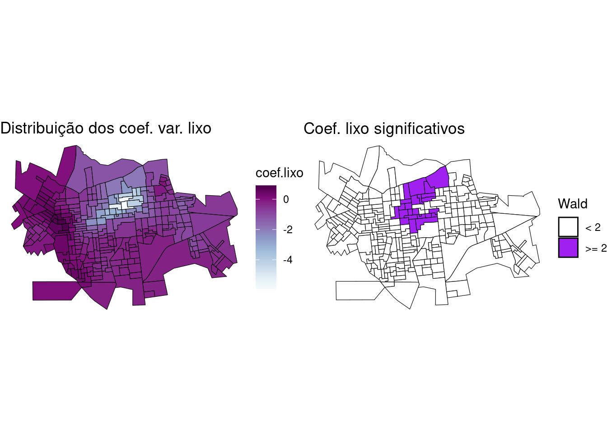
Checando os residuos para verificar a presença de autocorrelação para o modelo GWR.
results <- results %>%
replace_na(list(pred = 0))
# Calculando os resíduos para o modelo GWR
results$residuos <- setor.sf$tx - results$pred
moran.test(results$residuos, pesos.viz)
Moran I test under randomisation
data: results$residuos
weights: pesos.viz
Moran I statistic standard deviate = 7.4, p-value = 7e-14
alternative hypothesis: greater
sample estimates:
Moran I statistic Expectation Variance
0.246418 -0.003534 0.001140 Mapeando os coeficientes de regressão para a variável lixo por significancia através do teste de wald
# Calculando a estatística de wald
setor.sf$wald.teste <- abs(results$lixo/results$lixo_se)
# Dicotomizando a estatística de wald
setor.sf$wald.teste <- ifelse(setor.sf$wald.teste <
2, 0, 1)
map.wald <- ggplot(setor.sf) + geom_sf(aes(fill = factor(wald.teste)),
color = "black") + scale_fill_manual(values = c("white",
"purple"), labels = c("< 2", ">= 2"), name = "Wald") +
ggtitle("Coef. lixo significativos") + theme_void()
library(gridExtra)
grid.arrange(map.lixo, map.wald, ncol = 2)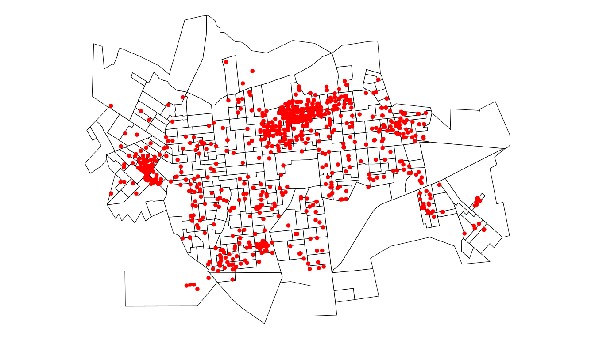
Mapa dos coeficientes de determinação regionalizados (\(R^2\) local).
ggplot(setor.sf) + geom_sf(aes(fill = localR2), color = "black") +
scale_fill_gradientn(colours = pal) + ggtitle("R² local") +
theme_void()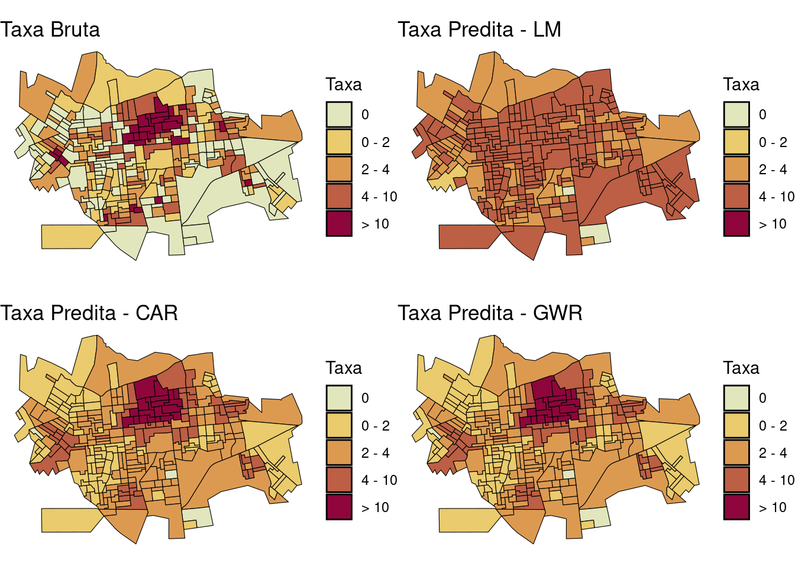
Verificando a distribuição dos preditos.
histdens <- function(x, titulo = "") {
densi <- density(x)
xli <- range(densi$x)
yli <- range(densi$y)
hist(x, col = "red", probability = T, xlim = xli,
ylim = yli, main = titulo)
lines(densi, lwd = 2)
abline(v = median(x), lwd = 4, col = 4, lty = 2)
}
attach(mtcars)
par(mfrow = c(2, 2))
hist.tx <- histdens(setor.sf$tx, "Tx Bruta")
hist.lm <- histdens(dourados.lm$fitted.values, "Pred LM")
hist.car <- histdens(dourados.car$fitted.values, "Pred CAR")
hist.gwr <- histdens(results$pred, "Pred GWR")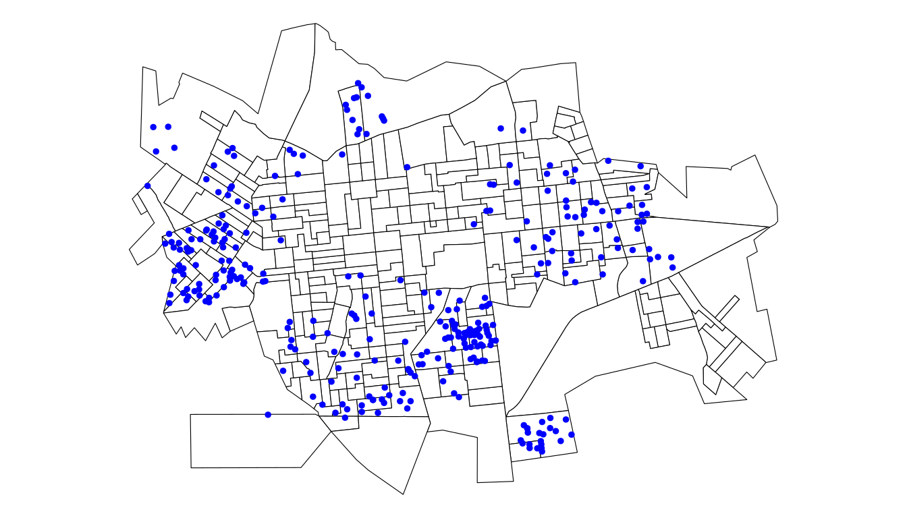
Mapeando os valores observados e preditos dos modelos ajustados
library(colorspace) #
setor.sf$brks <- cut(setor.sf$tx, include.lowest = TRUE,
right = TRUE, breaks = c(-4, 0, 2, 4, 10, 57),
labels = c("0", "0 - 2", "2 - 4", "4 - 10", "> 10"))
tx.bruta <- ggplot(setor.sf) + geom_sf(aes(fill = brks),
color = "black") + ggtitle("Taxa Bruta") + scale_fill_discrete_sequential(palette = "Heat2",
c1 = 80, c2 = 30, l1 = 30, l2 = 90, p1 = 0.2, p2 = 1.5,
na.value = "grey75", drop = FALSE, name = "Taxa") +
theme_void()
setor.sf$brks.lm <- cut(dourados.lm$fitted.values,
lowest = TRUE, right = TRUE, breaks = c(-4, 0,
2, 4, 10, 57), labels = c("0", "0 - 2", "2 - 4",
"4 - 10", "> 10"))
pred.lm <- ggplot(setor.sf) + geom_sf(aes(fill = brks.lm),
color = "black") + ggtitle("Taxa Predita - LM") +
scale_fill_discrete_sequential(palette = "Heat2",
c1 = 80, c2 = 30, l1 = 30, l2 = 90, p1 = 0.2,
p2 = 1.5, na.value = "grey75", drop = FALSE,
name = "Taxa") + theme_void()
setor.sf$brks.car <- cut(dourados.car$fitted.values,
lowest = TRUE, right = TRUE, breaks = c(-4, 0,
2, 4, 10, 57), labels = c("0", "0 - 2", "2 - 4",
"4 - 10", "> 10"))
pred.car <- ggplot(setor.sf) + geom_sf(aes(fill = brks.car),
color = "black") + ggtitle("Taxa Predita - CAR") +
scale_fill_discrete_sequential(palette = "Heat2",
c1 = 80, c2 = 30, l1 = 30, l2 = 90, p1 = 0.2,
p2 = 1.5, na.value = "grey75", drop = FALSE,
name = "Taxa") + theme_void()
setor.sf$brks.gwr <- cut(results$pred, lowest = TRUE,
right = TRUE, breaks = c(-4, 0, 2, 4, 10, 57),
labels = c("0", "0 - 2", "2 - 4", "4 - 10", "> 10"))
pred.gwr <- ggplot(setor.sf) + geom_sf(aes(fill = brks.gwr),
color = "black") + ggtitle("Taxa Predita - GWR") +
scale_fill_discrete_sequential(palette = "Heat2",
c1 = 80, c2 = 30, l1 = 30, l2 = 90, p1 = 0.2,
p2 = 1.5, na.value = "grey75", drop = FALSE,
name = "Taxa") + theme_void()
library(gridExtra)
grid.arrange(tx.bruta, pred.lm, pred.car, pred.gwr,
ncol = 2)
Verificando a distribuição dos resíduoas .
library(vioplot)
vioplot(dourados.lm$residuals, dourados.car$residuals,
results$residuos, names = c("LM", "CAR", "GWR"),
col = "orange")
title("Gráficos violinos da distribuição dos resíduos")
Mapeando os resíduos dos modelos ajustados
library(colorspace) #
setor.sf$brks.res.lm <- cut(dourados.lm$residuals,
include.lowest = TRUE, right = TRUE, breaks = c(-14,
-5, -1, 1, 5, 52), labels = c("< -5", "-5 a -1",
"0", "1 a 5", "> 5"))
res.lm <- ggplot(setor.sf) + geom_sf(aes(fill = brks.res.lm),
color = "black") + ggtitle("Resíduos - LM") +
scale_fill_discrete_sequential(palette = "Purple-Yellow",
c1 = 80, c2 = 30, l1 = 30, l2 = 90, p1 = 0.2,
p2 = 1.5, na.value = "grey75", drop = FALSE,
name = "Taxa") + theme_void()
setor.sf$brks.res.car <- cut(dourados.car$residuals,
include.lowest = TRUE, right = TRUE, breaks = c(-14,
-5, -1, 1, 5, 52), labels = c("< -5", "-5 a -1",
"0", "1 a 5", "> 5"))
res.car <- ggplot(setor.sf) + geom_sf(aes(fill = brks.res.car),
color = "black") + ggtitle("Resíduos - CAR") +
scale_fill_discrete_sequential(palette = "Purple-Yellow",
c1 = 80, c2 = 30, l1 = 30, l2 = 90, p1 = 0.2,
p2 = 1.5, na.value = "grey75", drop = FALSE,
name = "Taxa") + theme_void()
setor.sf$brks.res.gwr <- cut(results$residuos, include.lowest = TRUE,
right = TRUE, breaks = c(-14, -5, -1, 1, 5, 52),
labels = c("< -5", "-5 a -1", "0", "1 a 5", "> 5"))
res.gwr <- ggplot(setor.sf) + geom_sf(aes(fill = brks.res.gwr),
color = "black") + ggtitle("Resíduos - GWR") +
scale_fill_discrete_sequential(palette = "Purple-Yellow",
c1 = 80, c2 = 30, l1 = 30, l2 = 90, p1 = 0.2,
p2 = 1.5, na.value = "grey75", drop = FALSE,
name = "Taxa") + theme_void()
library(gridExtra)
grid.arrange(res.lm, res.car, res.gwr, ncol = 2)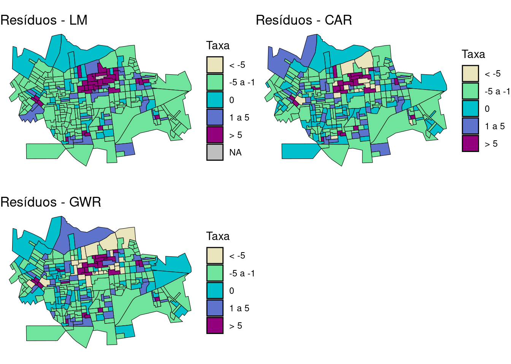
12.6 Bibliografia sugerida
Interactive Spatial Data Analysis by Trevor C. Bailey , Anthony C. Gatrell Routledge, 1995
Applied Spatial Statistics for Public Health Data; Lance A. Waller, Carol A. Gotway Wiley-Interscience 1St ed. 2004
Applied Spatial Data Analysis with R; Roger S. Bivand, Edzer Pebesma , Virgilio Gomez-Rubio Springer; Edição: 2nd ed. 2013
Online